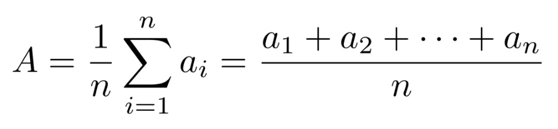

Note : Many of the graphics and descriptions may be found here : https://www.r4epi.com/measures-of-central-tendency
We have gotten to the point where we are starting to describe a given data set. Here is where we are, as of now :
Why do we want to be able to describe the central tendency of a data set? Consider epidemiology. In epidemiology, we often want to describe the “typical” person in a population with respect to some characteristic that is recorded as a numerical variable – like height or weight. The most basic, and probably most commonly used, way to do so is with a measure of central tendency.
In this lesson we have discussed three measures of central tendency:
The mean
The median
The mode
The Mean
When we talk about the typical, or “average”, value of some variable measured on a continuous scale, we are usually talking about the mean value of that variable. To be even more specific, we are usually talking about the arithmetic mean value. This value has some favorable characteristics that make it a good description of central tendency.
For starters it’s simple. Most people are familiar with the mean, and at the very least, have some intuitive sense of what it means (no pun intended).
In addition, there can be only one mean value for any set of values.
However, there are a couple of potentially problematic characteristics of the mean as well:
It’s susceptible to extreme values in your data. In other words, a couple of people with very atypical values for the characteristic you are interested in can drastically alter the value of the mean, and your estimate for the typical person in your population of interest along with it.
Additionally, it’s highly likely to calculate a mean value that is not actually observed anywhere in your data.
Let’s assume we have a data set with \(n\) points and we label them as \(a_1\), \(a_2\), . . . \(a_n\). Here is the fancy, schmancy formula for finding the Average / Mean :

The capital sigma there is a mathematical symbol that tells us to sum up what ever follows the sigma and we will then divide by \(n\) which is the number of points we have in the data set. It can be said a little easier as :
Caution : The mean is a nice way to get a value that describes the centrality of a data set, but it can sometimes be problematic if there are values that drastically higher or lower than most of the values in a data set.
We can quickly calculate the average to be \[(1 + 2 + 3 + \dots +9\,)\,/\,9 = \frac{45}{9}=5\] which is right smack dab in the middle of the data set. 50% of the scores are above and below the value for the average, os it is a very good measure of centrality for this set.
However, adding a single value can sometimes make the average a poor choice for measure of centrality. Consider adding the value \(100\) to the previous data set :
Calculating the average for this data set yields as average of : \[(1 + 2 + 3 + \dots +9+100\,)\,/\,9 = \frac{145}{10} = 14.5\] In this example, the mean is actually larger than 90% of all the scores in the data set. That means it is a poor choice as a representative value for the data set.
Note that scores that are far away from most of the values in a data set are called outliers and as you will see, even a single outlier can vastly affect the mean. This means that the mean is not resistant to outliers!
This is one of the reasons why it is important that there is more than one option as a measure of centrality.
The Median
The median is probably the second most commonly used measure of central tendency.
Like the mean, it’s computationally simple and relatively straightforward to understand.
There can be one, and only one, median.
And, its value may also be unobserved in the data.
The idea of finding the Median is fairly simple :
Line up the values from smallest to largest
The value that occurs in the middle will be the median
This means the median scores has half of the values below it and half the values above it, when you exclude the spot representing the median.
There is a small caveat depending on if there is an even or odd amount of values in the data set. Let’s assume there are n values in the data set.
Let’s assume n is odd. Consider this example where we have a data set with 7 values, where the data has already been arranged from smallest to largest:
When n is odd, the median is the value located in spot (n+1)/2. So in this case the median is located in spot \((7+1)/2 = 4\)th spot :
Notice that when we exclude the median, we have just as many values below the median (3) as we have above the median (3).
Important : The median is a spot-based measure. We are looking for the value that occurs in the middle spot. In this example, the median was in spot 4 with the median taking on the value of 18.
It is entirely possible that the median takes on a value below or above this spot if there are repeated values. Consider a similar data set :
In this case, the median takes on the value in the fourth spot, namely 15. We still have three values below the median : \(8\,\,\, 11 \,\,\, 15\,\) and three values above the median : \(24 \,\,\, 30\,\,\, 31\,\). So even though we have a value for the median that is also in a different spot of the data set, we still have 50% of the scores above the median and 50% of the scores below the median. This means that the important aspect of finding the median is finding the spot that is in the middle and that will inform us on the value of the median.
What happens when n is even? This complicates the process a bit because there is not a single value that falls in the middle. Consider this example of an already ordered set of six values :
As you can see above, we don’t have a single spot that is right in the middle that we can call the median. However, we do have two values in the middle. In this case, those values are 18 and 24. To get the median, we will simply find the average of these two values to create the median.
Finding the two middle spots is simple. The first value is located in spot \((n\,/\,2)\) and the second spot in lcoated immediatley following, \((n\,/\,2) + 1\). In the following example we have a data set with \(6\) values. Since this is an even amount of values, we will work with the values in spots \((6\,/\,2\,) = 3\) and \((6\,/\,2\,) + 1 = 4\)
As you can see spot 3 has the value \(18\) and spot 4 has the value \(24\). The median is the average of these two values. Therefore the median is \((18 + 24)/2 = (42) / 2 = 21\).
Note that in this case we still have the same amount of scores below the median as we have above the median. This shows us that 50% of the data set is below this value and 50% above this value which is the definition of median.
An interesting result is that in this case the median is not a value from the data set! If you look at the orginal six values in the data set, 21 is not one of them! If you have a data set with an even amount of values, this will almost always be the case. THe only time where the median will actually be a value on in the data set is if the two values in the middle happen to be the exact same value. Otherwise, the median will be a value not in the original data set.
Let’s revisit an issue we discovered when discussing averages, namely outliers. How do outliers affect the median?
Let calculate the median for the following two data sets :
In this example, there are \(9\) scores, which tells us the median is located in spot \(\frac{9+1}{2} = \frac{10}{2}= 5\). Spot 5 happens to contain the value \(5\). Notice that this stil has 50% of the scores below and 50% of the scores above the median which tells us it is a good representative for the measure of centrality.
What does adding an outlier do? How does it affect the median? Let’s explore and find out.
The average of these two values gives us \(\frac{5 + 6}{2} = 5.5\). Again, think about the definition of a measure of centrality. If you consider the median to be 5.5, then notice there are 5 values below the median and 5 valuse above the median, showing us that this is a good representative for the measure of centrality.
This tells us that outliers do not affect the median very much at all. The median moved from \(5\) up to \(5.5\). What this shows us is that medians are resistant to outiers! This means that if we have a data set that contains outliers, we need to consider unsing the median as the measure of centrality and not the mean.
The Mode
And finally, we have the mode, or the value that is most often observed in the data. It doesn’t get much simpler than that. But, unlike the mean and the median, there can be more than one mode for a given set of values. In fact, there can even be no mode if all the values are observed the exact same number of times. However, if there is a mode, by definition it’s observed in the data.
In this data set, no value appears more than any other value, so this data set does not have a mode!
Summary
Here is a graphic that reviews what we have discussed so far :
Calculating the Mean and Median
Now that we are all on the same page with respect to the fundamentals of central tendency, let’s remind ourselves how to calculate these measures using R.
Calculating the mean is really straightforward. We can just use base R’s built-in mean( ) function.
Load the dplyr package. We will need several dplyr functions and can install and load the package with the code below.
# Here is the command of we need to install the package. # install.packages("dplyr")# We can load the dplyr pack :library(dplyr)
Attaching package: 'dplyr'
The following objects are masked from 'package:stats':
filter, lag
The following objects are masked from 'package:base':
intersect, setdiff, setequal, union
We can simulate some data by typing (cut and paste?) in the following :
We loaded the tibble package so that we could use its tribble() function.
We used the tribble() function to simulate some data – heights and weights for 20 hypothetical students.
The tribble() function creates something called a tibble. A tibble is the tidyverse version of a data frame. In fact, it is a data frame, but with some additional functionality. You can use the link to read more about it if you’d like.
We used the tribble( ) function instead of the data.frame( ) function to create our data frame above because we can use the tribble( ) function to create our data frames in rows (like you see above) instead of columns with the c( ) function.
Using the tribble( ) function to create a data frame isn’t any better or worse than using the data.frame( ) function. I just wanted you to be aware that it exists and is sometimes useful.
MEAN Example : Find the mean of the heights in the data frame.
The name of the tibble is height_and_weight_20.
The name of the variable we want to use is the column ht_in
The way we can access a variable (column) of a data fram or tibble uses syntax such as data_frame_name$variable_name
Therefore we want to find the mean of height_and_weight_20$ht_in
We will use the command mean( ) as follows :
mean(height_and_weight_20$ht_in)
[1] 68.4
MEDIAN Example : Find the median of the heights in the data frame.
If we were going to do this by hand, we would first need to sort the data. We can accompish this using the sort( ) command. It will sort the list and the default listing is smallest to largest:
Because we have an even amount of terms, we would then locate the two middle values and find their average. We have 20 values in this data set, so we are looking at spots 10 and 11.
The median is the average of these two values which says the median is \(\frac{68+69}{2} = \frac{137}{2} = 68.5\)
We clearly don’t want to do this if we have a large amount of values in the data set. We will use the median( ) function to help us out.
median(height_and_weight_20$ht_in)
[1] 68.5
What About The Mode?
Base R does not have a built-in mode( ) function. Well, it actually does have a mode( ) function, but for some reason that function does not return the mode value(s) of a set of numbers. Instead, the mode( ) function gets or sets the type or storage mode of an object. For example:
mode(height_and_weight_20$ht_in)
[1] "numeric"
This is clearly not what we are looking for. So, how do we find the mode value(s)? Go back to the slides from the lesson to see how we found this.
Quickly Compare Mean And Median
Now that you know how to calculate the mean and the median, let’s compare these three measures of central tendency. This is a good opportunity to demonstrate some of the different characteristics of each that we spoke about earlier. Try the following code :
This example shows you how you can find the min( ), mean( ), median( ), and max( ) values in a data set. The summarise( ) command just prints them out nicely for us as a \(1 \times 4\) tibble.
This also allows us to quickly compare the values of the mean and the median. This can sometimes give us hints as to if we have any extreme values (outliers) in our data. If you remember, outiers can really affect the mean. Therefore, if we have a high outlier, it would pull the mean up much more than the median. If we have a low outlier, then the mean would be pulled down much more than the median.
So in the previous example, where the mean is 68.4 and the median is 68.5 then we have one of two options for us:
There are no outliers in the data set
There are the same amount of high and low outliers balancing each other out, or perhaps a bi-modal distribution.
This tells us that if the mean and median are not claose to each other, then there are some values that are affecting the mean. These could be outliers or they could be something as mundane as a data entry error. By running these comparisons, we can sometimes notice there is a problem with the data set.
For example, let’s do a quick summary for the weights instead of the heights and examine the output.
Do you see any red flags as you scan the results? Do you really think a mean weight of 1,113 pounds sounds reasonable? This should definitely be a red flag for you. Now move your gaze three columns to the right and notice that the maximum value of weight is 19,000 lbs – an impossible value for a study in human populations. In this case the real weight was supposed to be 190 pounds, but the person entering the data accidently got a little trigger-happy with the zero key.
This is an example of how we can use descriptive analysis to uncover errors in our data. Oftentimes, for various reasons, some observations for a given variable take on values that don’t make sense. Starting by calculating some basic descriptive statistics for each variable is one approach you can use to try to figure out if you have values in your data that don’t make sense.
In this case we can just go back and fix our data, but what if we didn’t know this value was an error? What if it were a value that was technically possible, but very unlikely? Well, we can’t just change values in our data. It’s unethical, and in some cases illegal. Below, we discuss how the properties of the median and mode can come in handy in situations such as this.
Properties of mean, median, and mode
Despite the fact that this impossibly extreme value is in our data, the median and mode estimates are reasonable estimates of the typical person’s weight in this sample. This is what is meant when it is said that the median and mode were more “resistant to extreme values” than the mean.
You may also notice that no person in our sample had an actual weight of 1,113 (the mean) or even 176 (the median). This is what I meant above when I said that the mean and median values are “not necessarily observed in the data.”
In this case, the mode value (176) is also a more reasonable estimate of the average person’s weight than the mean. And unlike the mean and the median, participants 18 and 19 actually weigh 176 pounds. I’m not saying that the mode is always the best measure of central tendency to use. However, I am saying that you can often learn useful information from your data by calculating and comparing these relatively simple descriptive statistics on each of your numeric variables.
Missing Data
We can use the dplyr::filter( ) function to remove all the rows from our data frame that contained a missing value for any of our variables of interest. This is called a complete case analysis. This method should pretty much always work, but in this section I’m going to show you an alternative method for dropping missing values from your analysis that you are likely to come across often when reading R documentation – the na.rm argument.
Many R functions that perform calculations on numerical variables include an na.rm – short for “Remove NA” – argument. By default, this argument is typically set to FALSE. By passing the value TRUE to this argument, we can perform a complete case analysis. Let’s quickly take a look at how it works.
We already saw that we can calculate the mean value of a numeric vector using the mean( ) function. For instance, if I wanted to find the average of the three numbers 34, 87, 23, I could create a vector of these three numbers and then put the vector into the mean( ) function.
mean(c(34, 87, 23))
[1] 48
But what happens when our vector has a missing value?
mean(c(34, 87, NA))
[1] NA
As you can see, the mean( ) function returns NA by default when we pass it a numeric vector that contains a missing value. It took me a little while to wrap my head around why this is the case when I was a student. Perhaps some of you are confused as well. The logic goes something like this.
In R, an NA doesn’t represent the absence of a value – a value that doesn’t exist at all; rather, it represents a value that does exist, but is unknown to us. So, if I ask you to tell me the mean of a set of numbers that contains 34, 87, and some unknown number what would your answer be? Well, you can’t just give me the mean of 34 and 87. That would imply that the unknown number doesn’t exist. Further, you can’t really give me any numeric answer because that answer will depend on the value of the missing number. So, the only logical answer to give me is something like “I don’t know” or “it depends.” That is essentially what R is telling us when it returns an NA.
While this answer is technically correct, it usually isn’t very satisfying to us. Instead, we often want R to calculate the mean of the numbers that remain after all missing values are removed from the original set. The implicit assumption is that the mean of that reduced set of numbers will be “close enough” to the mean of the original set of numbers for our purposes. We can ask R to do this by changing the value of the na.rm argument from FALSE – the default – to TRUE.
mean(c(34, 87, NA), na.rm =TRUE)
[1] 60.5
Finally, let’s work with mutate( ) and na.rm = TRUE in a dplyr pipeline. We will first use the replace( ) function to add some missing values to our height_and_weight_20 data. (Remember to make sure the dplyr package is loaded up to use the mutate( ) and %>% commands.)
Note : Here is more information on the mutate( ) command. It basically either (a) creates a new variable, which means we are adding a column to the data set or (b) manipulates a current variable, as we see below :
This says to take the data set and “pipe it” into the next command, which is the mutate( ) command.
“mutate(ht_in = replace(ht_in, c(1,2), NA)) %>%”
Since the variable ht_in already exists in this data frame, we are not going to create a new column (variable)
We are then going to look at the variable ht_in, look at spots 1 (71) and 2 (69), and then replace them with an NA.
We then piped this result to the print( ) command which printed out the modified data set so we could verify the results. We didn’t absolutely need to do this as we could also have examined the variable in the Environment pane on Posit Cloud, but it does look nice to see it.
“height_and_weight_20 <-”
This command tells us to store the result back in the variable “height_and_weight-20”
The height variable now has a couple of NA values. What happens if we try to do a quick summary of the variable?
These are just a few of hte ways we can handle data set swith extreme or missing values. We will delve more into this when we dive deeper into data cleaning.